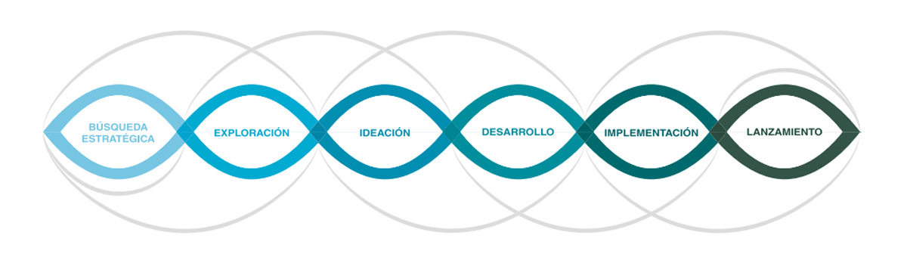
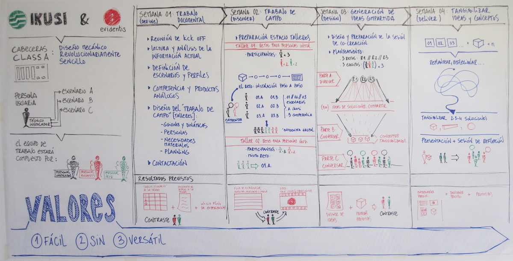

Soy un diseñador metodológico, me gustan los procesos de trabajo bien definidos y estructurados, mejor dicho, necesito trabajar con ellos. Pero no lo veo como un "corset" al cuál hay que ceñirse o ajustarse (o que te ajusta a tí), sino como un marco de referencia en el cuál trabajar, siendo flexible para los cambios y las modificaciones.
En el ámbito del "Design Thinking" existen un sinfín de metodologías y de procesos, cada una con sus particularidades y matices. A veces pienso que con excesiva quisquillosería o meticulosidad en la búsqueda de estos matices. Yo uso como referencias principales el proceso del "doble diamante" definido por el British Design Council y el proceso de 5 pasos desarrollado por la d.school de Stanford (ver figura 1.1.). Ambos tienen muchos parecidos, con la principal diferencia de la fase explícita de testeo que incluye estos últimos.
Además de los diferentes procesos metodológicos, cada vez existen más herramientas para usar en cada una de las etapas, y más cartas y fichas para hacerlo como "un juego". Las "Method Cards" de IDEO fueron pioneras en esto (también), y desde entonces se han multiplicado sin parar.
Yo mismo participé hace 2 años en un proyecto de investigación en Mondragon Unibertsitatea para desarrollar una metodología propia, basada en una suma de referencias internacional y nuestra experiencia. Además, desarrollamos 16 herramientas con sus plantillas de uso, que están disponibles en la web de DBZ (Diseinu Berrikuntza Zentroa) de Mondragon Unibertsitatea.
 Metodología de diseño de DBZ"Todas estos métodos comparten los siguientes rasgos principales:
1. Hay una fase inicial de comprensión del sistema, y de los problemas mediante un enfoque cualitativo, observando y entrevistando a las personas usuarias y el resto de stakeholders.
2. Se visualiza, organiza, sintetiza y analiza la información para identificar patrones, problemas, retos y oportunidades.
3. Se generan nuevos conceptos de soluciones que respondan a los retos y oportunidades que hemos definido.
4. Se prototipan y testean algunas de las soluciones.
5. Es un proceso iterativo, con varios ciclos.
Pero hay que aclarar una cosa: todas estas metodologías y herramientas no son "café con leche para todos", no se pueden aplicar directamente, no es un "copy-paste" de un proyecto a otro. Es decir, no es "prêt à porter". Cada proyecto es único, y pide abordarlo de un modo particular, es un traje hecho a medida.
Cuando me llama un posible cliente, lo más habitual es que me digan cosas de este tipo: "tengo este problema", "quiero comprender a mis usuarios", "quiero identificar nuevas oportunidades"... "¿cómo lo harías? Y aquí empieza el proceso de "metadiseño", de diseñar el proceso de diseño. Usando alguna o varias de las metodologías y herramientas como referencia, sí, pero adecuándolas a las características del proyecto: tiempo disponible, presupuesto, tema, sector, amplitud o concreción del reto, localización y accesibilidad de los stakeholders etc. Y esta etapa es esencial en el proyecto, para definir la hoja de ruta principal.
 Propuesta de proyecto / proceso diseñada para IKUSI VelatiaAhora bien, esta hoja de ruta no es un dogma. Según avanzamos en el proceso, vayamos descubriendo y conociendo más cosas, hay que ser flexibles para modificarlo y adecuarlo, actualizarlo, de eliminar unas acciones y añadir otras. Y para ello hay una parte fundamental: que el cliente (o el jefe, el responsable del proyecto) lo entienda del mismo modo.
Hace 3 semanas he empezado a trabajar en un proyecto sobre experiencia de huéspedes y trabajadores en hoteles con la empresa hMobile, para la cadena hotelera Meliá. Pues bien, parte del proceso y algunos de los objetivos ya los hemos modificado, los hemos evolucionado basándonos en el aprendizaje del camino. La hoja de ruta es una referencia, un mapa, una brújula. Pero el terreno real siempre presenta dificultades, sorpresas e incertidumbres no previstas, y no hay que ir mirando constantemente el mapa, sino la realidad, sino queremos tropezar.
Además, el proceso es solo una ayuda. No identifica problemas, oportunidades y retos, no genera ideas y soluciones. Para eso estamos las personas.
Y repito el inicio del post: soy metodológico, pero cada vez creo menos en ellos, y más en la actitud, conocimiento e implicación de las personas que hacen el proyecto.